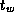
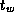

![[DBPP]](pictures//asm_color_tiny.gif)


![[Search]](pictures//search_motif.gif)
Next: Chapter Notes
Up: 5 Compositional C++
Previous: 5.13 Summary
-
Extend Program 5.4 to allow for nonbinary trees: that
is, trees with an arbitrary number of subtrees rooted at each node.
-
Design and construct a CC++
implementation of the manager/worker
structure used in the parameter study problem described in
Section 1.4.4.
-
Design and construct a decentralized version of the manager/worker
structure developed in Exercise 2. Design and carry out
experiments to determine when each version is more efficient.
-
Design and implement a program that can be used to quantify
CC++
processor object and thread creation costs, both within the same
processor and on remote processors. Conduct experiments to measure
these costs, and obtain estimates for
 and .
and .
-
Implement and instrument the channel library presented in
Section 5.11, and use this code to measure
CC++
communication costs on various parallel computers.
-
Modify the program developed in Exercise 5 to use
spawn to implement the RPC used for a send operation, and conduct
experiments to compare the performance of the two versions.
-
Complete Program 5.13, using the channel library of
Section 5.11 to perform communication.
-
Complete Program 5.14, using the channel library of
Section 5.11 to perform communication.
-
Design and carry out experiments to compare the performance of the
programs developed in Exercises 7 and 8.
-
Use the POArray class of Program 5.10 to implement a
version of Program 5.4 in which search tasks are
implemented as threads mapped to a fixed number of processor objects.
-
Extend the program developed in Exercise 7 to provide a
2-D decomposition of principal data structures.
-
Extend the channel library presented in Section 5.11 to
allow polling for pending messages.
-
Extend the channel library presented in Section 5.11 to
provide a merger that allows multiple senders on a channel.
-
Implement a hypercube communication template (see
Chapter 11). Use this template to implement simple
reduction, vector reduction, and broadcast algorithms.
-
Construct a CC++
implementation of the tuple space module described
in Section 4.5. Use this module to implement the
database search problem described in that section.
Next: Chapter Notes
Up: 5 Compositional C++
Previous: 5.13 Summary
© Copyright 1995 by Ian Foster